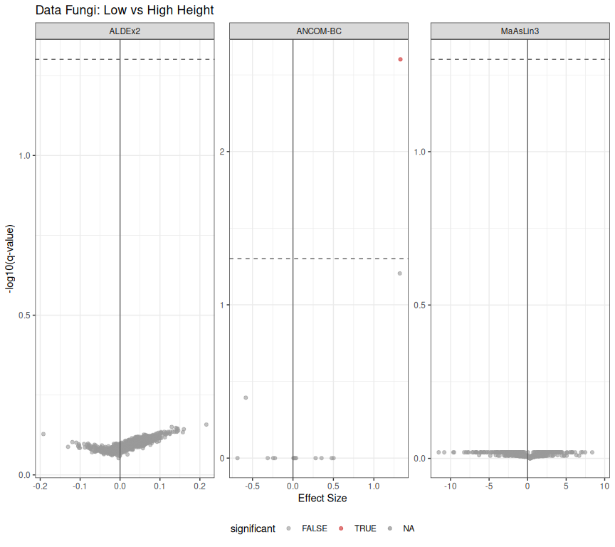
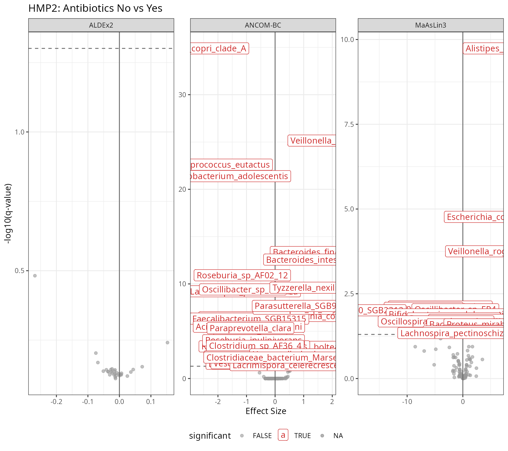
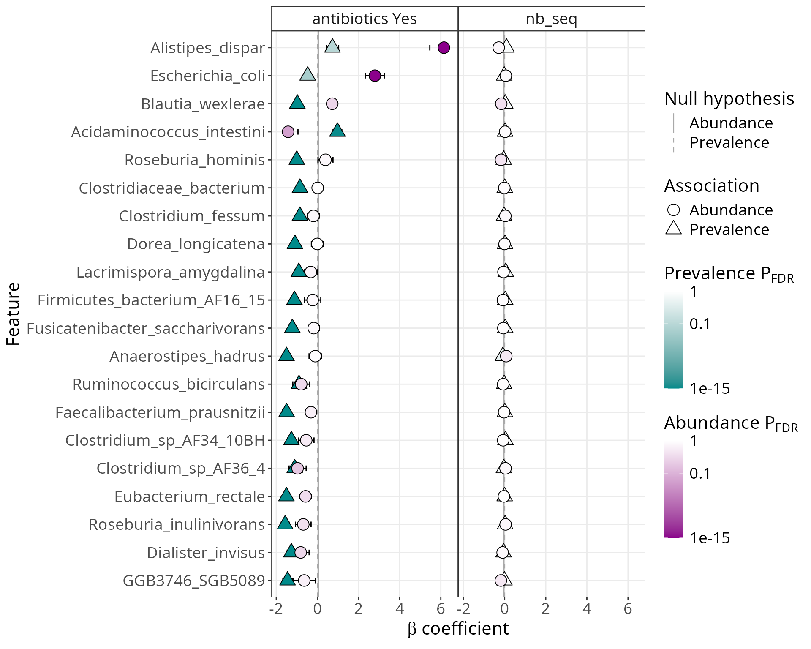
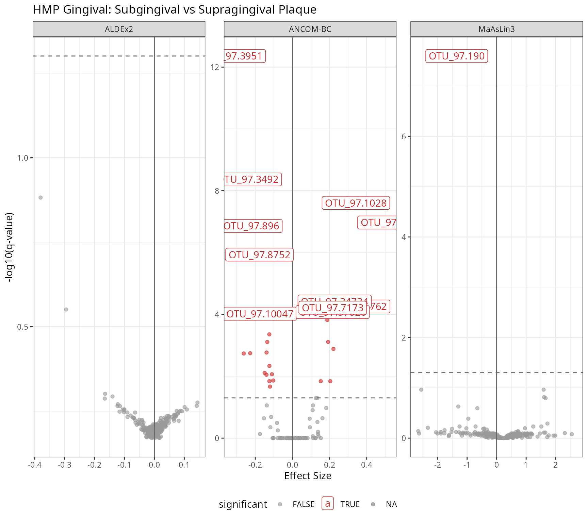
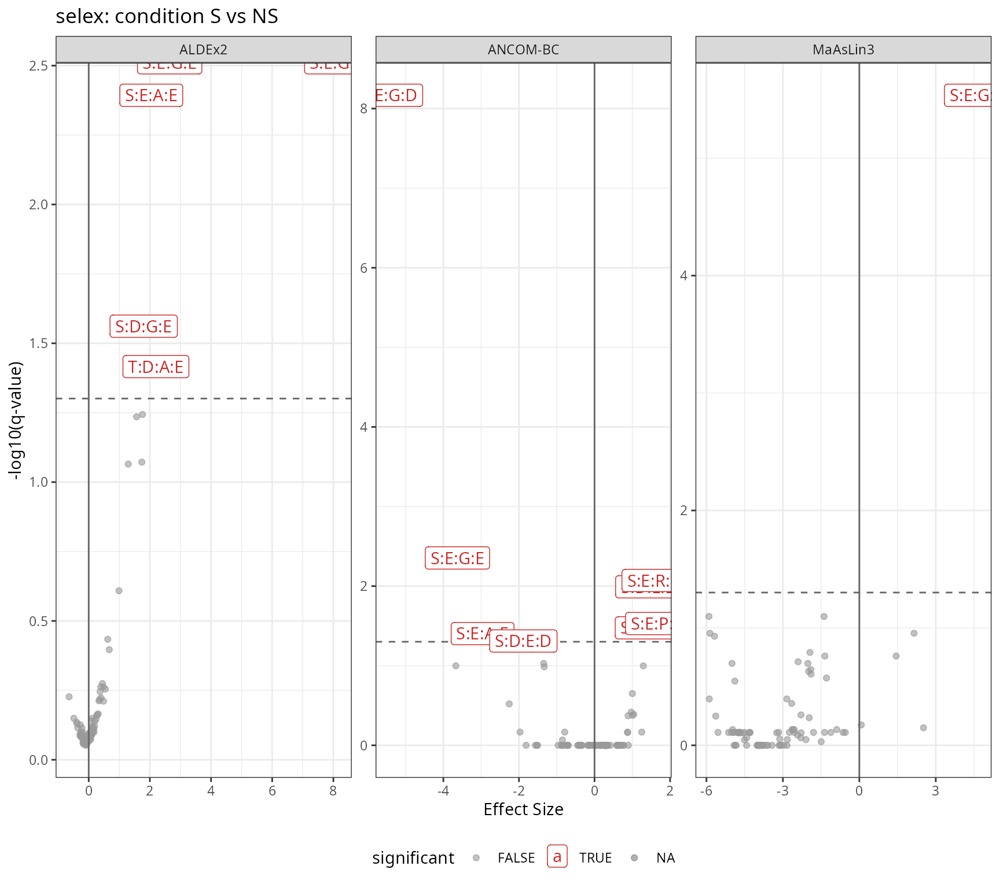
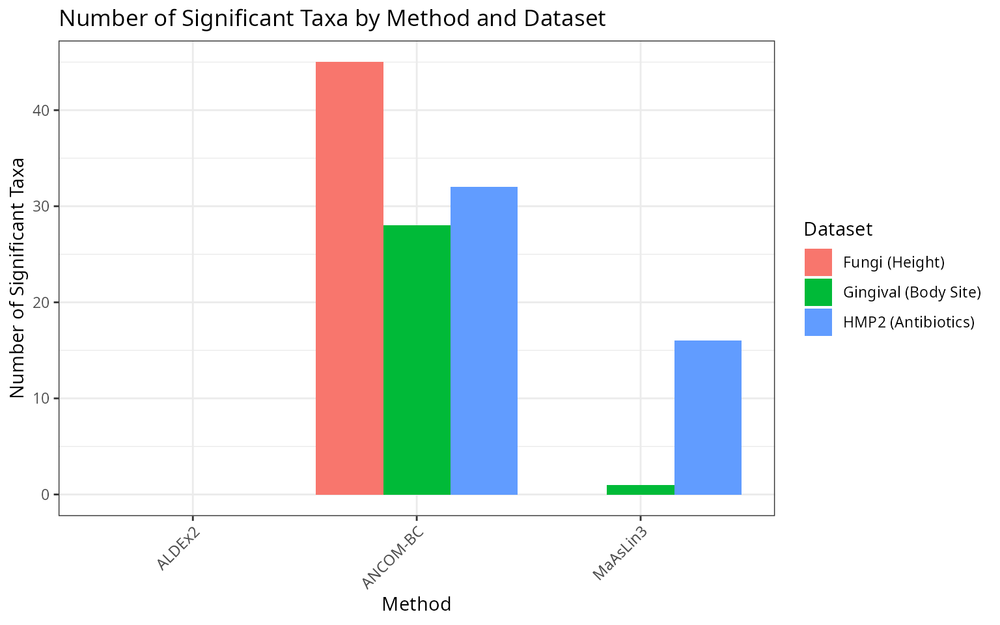

Comparing Differential Abundance Methods
Adrien Taudière
2026-03-13
Source:vignettes/compare-da-methods.Rmd
compare-da-methods.RmdIntroduction
This vignette compares three popular differential abundance (DA) methods for microbiome data:
- ANCOM-BC2 (Analysis of Compositions of Microbiomes with Bias Correction): Uses a linear regression framework with bias correction for compositionality
- ALDEx2 (ANOVA-Like Differential Expression): Uses centered log-ratio transformation and Monte Carlo sampling from Dirichlet distribution
- MaAsLin3 (Microbiome Multivariable Associations with Linear Models): Fits generalized linear models with options for both abundance and prevalence
We compare these methods on three different datasets to illustrate their behavior across different experimental designs and data characteristics.
Dataset 1: Fungi and Tree Height
The data_fungi dataset from MiscMetabar contains fungal
communities sampled at different heights on trees. We compare Low vs
High height positions.
Data Preparation
data("data_fungi", package = "MiscMetabar")
# Subset to Low and High only for a clear binary comparison
data_fungi_hl <- subset_samples(data_fungi, Height %in% c("Low", "High"))
data_fungi_hl <- prune_taxa(taxa_sums(data_fungi_hl) > 0, data_fungi_hl)
cat("Dataset: data_fungi (Low vs High)\n")
#> Dataset: data_fungi (Low vs High)
cat("Samples:", nsamples(data_fungi_hl), "\n")
#> Samples: 86
cat("Taxa:", ntaxa(data_fungi_hl), "\n")
#> Taxa: 1164
cat("Groups:", table(sample_data(data_fungi_hl)$Height), "\n")
#> Groups: 41 45Run ANCOM-BC
res_ancombc_fungi <- MiscMetabar::ancombc_pq(
data_fungi_hl,
fact = "Height",
levels_fact = c("Low", "High"),
tax_level = NULL
)
# Extract results
ancombc_df_fungi <- res_ancombc_fungi$res |>
filter(!is.na(lfc_HeightHigh)) |>
mutate(
method = "ANCOM-BC2",
effect = lfc_HeightHigh,
qvalue = q_HeightHigh,
significant = diff_HeightHigh
) |>
dplyr::select(taxon, method, effect, qvalue, significant)
cat("ANCOM-BC significant taxa:", sum(ancombc_df_fungi$significant), "\n")
#> ANCOM-BC significant taxa: 45Run ALDEx2
res_aldex_fungi <- MiscMetabar::aldex_pq(
data_fungi_hl,
bifactor = "Height",
modalities = c("Low", "High")
)
aldex_df_fungi <- res_aldex_fungi |>
tibble::rownames_to_column("taxon") |>
mutate(
method = "ALDEx2",
effect = effect,
qvalue = wi.eBH,
significant = wi.eBH < 0.05
) |>
dplyr::select(taxon, method, effect, qvalue, significant)
cat("ALDEx2 significant taxa:", sum(aldex_df_fungi$significant), "\n")
#> ALDEx2 significant taxa: 0Run MaAsLin3
res_maaslin3_fungi <- maaslin3_pq(
data_fungi_hl,
formula = "~ Height",
reference = list(Height = "Low"),
output = tempfile(),
correction_for_sample_size = FALSE,
plot_summary_plot = FALSE,
plot_associations = FALSE
)
maaslin3_df_fungi <- res_maaslin3_fungi$fit_data_abundance$results |>
filter(metadata == "Height") |>
mutate(
taxon = feature,
method = "MaAsLin3",
effect = coef,
qvalue = qval_individual,
significant = qval_individual < 0.05
) |>
dplyr::select(taxon, method, effect, qvalue, significant)
cat("MaAsLin3 significant taxa:", sum(maaslin3_df_fungi$significant, na.rm = TRUE), "\n")
#> MaAsLin3 significant taxa: 0Compare Results
# Combine results
combined_fungi <- bind_rows(ancombc_df_fungi, aldex_df_fungi, maaslin3_df_fungi)
# Volcano plots
p_volcano_fungi <- ggplot(
combined_fungi,
aes(x = effect, y = -log10(qvalue), color = significant)
) +
geom_point(alpha = 0.6) +
geom_hline(yintercept = -log10(0.05), linetype = "dashed", color = "grey40") +
geom_vline(xintercept = 0, color = "grey40") +
scale_color_manual(values = c("FALSE" = "grey60", "TRUE" = "firebrick3")) +
facet_wrap(~method, scales = "free") +
labs(
title = "Data Fungi: Low vs High Height",
x = "Effect Size",
y = "-log10(q-value)"
) +
theme_bw() +
theme(legend.position = "bottom") +
geom_label(
data = combined_fungi %>% filter(significant),
aes(label=taxon)
)
print(p_volcano_fungi)
# Find overlapping significant taxa
sig_ancombc <- ancombc_df_fungi$taxon[ancombc_df_fungi$significant]
sig_aldex <- aldex_df_fungi$taxon[aldex_df_fungi$significant]
sig_maaslin3 <- na.omit(maaslin3_df_fungi$taxon[maaslin3_df_fungi$significant])
# Overlap summary
cat("\nSignificant taxa overlap:\n")
#>
#> Significant taxa overlap:
cat("ANCOM-BC only:", length(setdiff(sig_ancombc, union(sig_aldex, sig_maaslin3))), "\n")
#> ANCOM-BC only: 45
cat("ALDEx2 only:", length(setdiff(sig_aldex, union(sig_ancombc, sig_maaslin3))), "\n")
#> ALDEx2 only: 0
cat("MaAsLin3 only:", length(setdiff(sig_maaslin3, union(sig_ancombc, sig_aldex))), "\n")
#> MaAsLin3 only: 0
cat("All three:", length(Reduce(intersect, list(sig_ancombc, sig_aldex, sig_maaslin3))), "\n")
#> All three: 0Dataset 2: HMP2 and Antibiotics
The HMP2 dataset from the maaslin3 package contains gut microbiome data from the Human Microbiome Project 2. We compare samples with and without antibiotic usage.
Data Preparation
# Read the HMP2 default dataset from maaslin3 package
taxa_table_name <- system.file("extdata", "HMP2_taxonomy.tsv", package = "maaslin3")
taxa_table <- read.csv(taxa_table_name, sep = "\t", row.names = 1)
metadata_name <- system.file("extdata", "HMP2_metadata.tsv", package = "maaslin3")
metadata <- read.csv(metadata_name, sep = "\t", row.names = 1)
# Set factor levels
metadata$antibiotics <- factor(metadata$antibiotics, levels = c("No", "Yes"))
# Create phyloseq object
otu <- otu_table(as.matrix(taxa_table), taxa_are_rows = FALSE)
sam <- sample_data(metadata)
species_names <- colnames(taxa_table)
tax_df <- data.frame(
Species = species_names,
Genus = sapply(strsplit(species_names, "_"), \(x) x[1]),
row.names = species_names
)
tax <- tax_table(as.matrix(tax_df))
physeq_hmp2 <- phyloseq(otu, sam, tax)
cat("Dataset: HMP2 (Antibiotics No vs Yes)\n")
#> Dataset: HMP2 (Antibiotics No vs Yes)
cat("Samples:", nsamples(physeq_hmp2), "\n")
#> Samples: 1527
cat("Taxa:", ntaxa(physeq_hmp2), "\n")
#> Taxa: 151
cat("Groups:", table(sample_data(physeq_hmp2)$antibiotics), "\n")
#> Groups: 1374 153Run ANCOM-BC
res_ancombc_hmp2 <- MiscMetabar::ancombc_pq(
physeq_hmp2,
fact = "antibiotics",
levels_fact = c("No", "Yes"),
tax_level = NULL
)
ancombc_df_hmp2 <- res_ancombc_hmp2$res |>
filter(!is.na(lfc_antibioticsYes)) |>
mutate(
method = "ANCOM-BC",
effect = lfc_antibioticsYes,
qvalue = q_antibioticsYes,
significant = diff_antibioticsYes
) |>
dplyr::select(taxon, method, effect, qvalue, significant)
cat("ANCOM-BC significant taxa:", sum(ancombc_df_hmp2$significant), "\n")
#> ANCOM-BC significant taxa: 32Run ALDEx2
physeq_hmp2@sam_data$antibiotics <- as.character(physeq_hmp2@sam_data$antibiotics)
physeq_hmp2@otu_table <- otu_table(
round(as.matrix(physeq_hmp2@otu_table))*1000,
taxa_are_rows = taxa_are_rows(physeq_hmp2)
)
res_aldex_hmp2 <- MiscMetabar::aldex_pq(
physeq_hmp2,
test="t",
bifactor = "antibiotics",
modalities = c("No", "Yes")
)
aldex_df_hmp2 <- res_aldex_hmp2 |>
tibble::rownames_to_column("taxon") |>
mutate(
method = "ALDEx2",
effect = effect,
qvalue = wi.eBH,
significant = wi.eBH < 0.05
) |>
dplyr::select(taxon, method, effect, qvalue, significant)
cat("ALDEx2 significant taxa:", sum(aldex_df_hmp2$significant), "\n")
#> ALDEx2 significant taxa: 0Run MaAsLin3
otu_maaslin <- otu_table(as.matrix(taxa_table), taxa_are_rows = FALSE)
sam_maaslin <- sample_data(metadata)
physeq_hmp2_maaslin <- phyloseq(otu_maaslin, sam_maaslin, tax)
res_maaslin3_hmp2 <- maaslin3_pq(
physeq_hmp2_maaslin,
formula = "~ antibiotics",
reference = list(antibiotics = "No"),
output = tempfile()
)
maaslin3_df_hmp2 <- res_maaslin3_hmp2$fit_data_abundance$results |>
filter(metadata == "antibiotics") |>
mutate(
taxon = feature,
method = "MaAsLin3",
effect = coef,
qvalue = qval_individual,
significant = qval_individual < 0.05
) |>
dplyr::select(taxon, method, effect, qvalue, significant)
cat("MaAsLin3 significant taxa:", sum(maaslin3_df_hmp2$significant, na.rm = TRUE), "\n")
#> MaAsLin3 significant taxa: 16Compare Results
combined_hmp2 <- bind_rows(ancombc_df_hmp2, aldex_df_hmp2, maaslin3_df_hmp2)
p_volcano_hmp2 <- ggplot(
combined_hmp2,
aes(x = effect, y = -log10(qvalue), color = significant)
) +
geom_point(alpha = 0.6) +
geom_hline(yintercept = -log10(0.05), linetype = "dashed", color = "grey40") +
geom_vline(xintercept = 0, color = "grey40") +
scale_color_manual(values = c("FALSE" = "grey60", "TRUE" = "firebrick3")) +
facet_wrap(~method, scales = "free") +
labs(
title = "HMP2: Antibiotics No vs Yes",
x = "Effect Size",
y = "-log10(q-value)"
) +
theme_bw() +
theme(legend.position = "bottom") +
geom_label(
data = combined_hmp2 %>% filter(significant),
aes(label=taxon)
)
print(p_volcano_hmp2)
MaAsLin3 Summary Plot
# Use the default summary plot from gg_maaslin3_plot
p_summary <- gg_maaslin3_plot(res_maaslin3_hmp2, type = "summary", top_n = 20)
#> 2026-03-13 14:53:10.736545 INFO::Writing summary plot of significant
#> results to file: /tmp/Rtmpu0Y0R3/maaslin3_plot_1516c785bd01c/figures/summary_plot.pdf
print(p_summary)
Dataset 3: HMP Gingival Microbiome
The HMP_2012_16S_gingival_V13 dataset from MicrobiomeBenchmarkData contains oral microbiome data comparing subgingival and supragingival plaque.
Data Preparation
# Get the dataset
gingival_data <- MicrobiomeBenchmarkData::getBenchmarkData(
"HMP_2012_16S_gingival_V13",
dryrun = FALSE
)[[1]]
# Convert to phyloseq
gingival_pq <- mia::convertToPhyloseq(gingival_data)
gingival_pq@tax_table <- tax_table(data.frame(
Genus = paste0("Genus", 1:ntaxa(gingival_pq)),
row.names = taxa_names(gingival_pq)
))
taxa_names(gingival_pq) <- names(gingival_data)
# Subset gingival_pq to only 1000 taxa for efficiency
set.seed(123)
selected_taxa <- sample(taxa_names(gingival_pq), 1000)
gingival_pq <- prune_taxa(selected_taxa, gingival_pq)
cat("Dataset: HMP Gingival (subgingival vs supragingival plaque)\n")
#> Dataset: HMP Gingival (subgingival vs supragingival plaque)
cat("Samples:", nsamples(gingival_pq), "\n")
#> Samples: 311
cat("Taxa:", ntaxa(gingival_pq), "\n")
#> Taxa: 1000
cat("Groups:", table(sample_data(gingival_pq)$body_subsite), "\n")
#> Groups: 152 159Run ANCOM-BC
res_ancombc_ging <- MiscMetabar::ancombc_pq(
gingival_pq,
fact = "body_subsite",
levels_fact = c("subgingival_plaque", "supragingival_plaque"),
tax_level = NULL
)
# Column name varies based on factor level
lfc_col <- grep("^lfc_", colnames(res_ancombc_ging$res), value = TRUE)[1]
q_col <- grep("^q_", colnames(res_ancombc_ging$res), value = TRUE)[1]
diff_col <- grep("^diff_", colnames(res_ancombc_ging$res), value = TRUE)[1]
ancombc_df_ging <- res_ancombc_ging$res |>
filter(!is.na(.data[[lfc_col]])) |>
mutate(
method = "ANCOM-BC",
effect = .data[[lfc_col]],
qvalue = .data[[q_col]],
significant = .data[[diff_col]]
) |>
dplyr::select(taxon, method, effect, qvalue, significant)
cat("ANCOM-BC significant taxa:", sum(ancombc_df_ging$significant), "\n")
#> ANCOM-BC significant taxa: 28Run ALDEx2
res_aldex_ging <- MiscMetabar::aldex_pq(
gingival_pq,
bifactor = "body_subsite",
modalities = c("subgingival_plaque", "supragingival_plaque")
)
aldex_df_ging <- res_aldex_ging |>
tibble::rownames_to_column("taxon") |>
mutate(
method = "ALDEx2",
effect = effect,
qvalue = wi.eBH,
significant = wi.eBH < 0.05
) |>
dplyr::select(taxon, method, effect, qvalue, significant)
cat("ALDEx2 significant taxa:", sum(aldex_df_ging$significant), "\n")
#> ALDEx2 significant taxa: 0Run MaAsLin3
res_maaslin3_ging <- maaslin3_pq(
gingival_pq,
formula = "~ body_subsite",
reference = list(body_subsite = "subgingival_plaque"),
output = tempfile(),
correction_for_sample_size = FALSE,
plot_summary_plot = FALSE,
plot_associations = FALSE
)
maaslin3_df_ging <- res_maaslin3_ging$fit_data_abundance$results |>
filter(grepl("body_subsite", metadata)) |>
mutate(
taxon = feature,
method = "MaAsLin3",
effect = coef,
qvalue = qval_individual,
significant = qval_individual < 0.05
) |>
dplyr::select(taxon, method, effect, qvalue, significant)
cat("MaAsLin3 significant taxa:", sum(maaslin3_df_ging$significant, na.rm = TRUE), "\n")
#> MaAsLin3 significant taxa: 1Compare Results
combined_ging <- bind_rows(ancombc_df_ging, aldex_df_ging, maaslin3_df_ging)
p_volcano_ging <- ggplot(
combined_ging,
aes(x = effect, y = -log10(qvalue), color = significant)
) +
geom_point(alpha = 0.6) +
geom_hline(yintercept = -log10(0.05), linetype = "dashed", color = "grey40") +
geom_vline(xintercept = 0, color = "grey40") +
scale_color_manual(values = c("FALSE" = "grey60", "TRUE" = "firebrick3")) +
facet_wrap(~method, scales = "free") +
labs(
title = "HMP Gingival: Subgingival vs Supragingival Plaque",
x = "Effect Size",
y = "-log10(q-value)"
) +
theme_bw() +
theme(legend.position = "bottom") +
geom_label(
data = combined_ging %>% filter(qvalue < 0.0001),
aes(label=taxon)
)
print(p_volcano_ging)
Dataset 4: selex
library(ALDEx2)
data(selex)
selex <- selex[1201:1300,] # subset for efficiency
conds <- c(rep("NS", 7), rep("S", 7))
physeq_selex <- phyloseq(otu_table(selex, taxa_are_rows = TRUE),
sample_data(data.frame(condition = conds, row.names = colnames(selex))))
physeq_selex@tax_table <- tax_table(data.frame(Genus = paste0("Genus", 1:100), row.names = rownames(selex)))
taxa_names(physeq_selex) <- rownames(selex)Run ANCOM-BC
res_ancombc_selex <- MiscMetabar::ancombc_pq(
physeq_selex,
fact = "condition",
levels_fact = c("S", "NS"),
tax_level = NULL
)
ancombc_df_selex <- res_ancombc_selex$res |>
filter(!is.na(lfc_conditionNS)) |>
mutate(
method = "ANCOM-BC",
effect = lfc_conditionNS,
qvalue = q_conditionNS,
significant = diff_conditionNS
) |>
dplyr::select(taxon, method, effect, qvalue, significant)
cat("ANCOM-BC significant taxa:", sum(ancombc_df_selex$significant), "\n")
#> ANCOM-BC significant taxa: 8Run ALDEx2
res_aldex_selex <- MiscMetabar::aldex_pq(
physeq_selex,
test="t",
bifactor = "condition",
modalities = c("S", "NS")
)
aldex_df_selex <- res_aldex_selex |>
tibble::rownames_to_column("taxon") |>
mutate(
method = "ALDEx2",
effect = effect,
qvalue = wi.eBH,
significant = wi.eBH < 0.05
) |>
dplyr::select(taxon, method, effect, qvalue, significant)
cat("ALDEx2 significant taxa:", sum(aldex_df_selex$significant), "\n")
#> ALDEx2 significant taxa: 5Run MaAsLin3
res_maaslin3_selex <- maaslin3_pq(
physeq_selex,
formula = "~ condition",
reference = list(S = "S"),
output = tempfile()
)
maaslin3_df_selex <- res_maaslin3_selex$fit_data_abundance$results |>
filter(metadata == "condition") |>
mutate(
taxon = feature,
method = "MaAsLin3",
effect = coef,
qvalue = qval_individual,
significant = qval_individual < 0.05
) |>
dplyr::select(taxon, method, effect, qvalue, significant)
cat("MaAsLin3 significant taxa:", sum(maaslin3_df_selex$significant, na.rm = TRUE), "\n")
#> MaAsLin3 significant taxa: 1Compare Results
combined_selex <- bind_rows(ancombc_df_selex, aldex_df_selex, maaslin3_df_selex)
p_volcano_selex <- ggplot(
combined_selex,
aes(x = effect, y = -log10(qvalue), color = significant)
) +
geom_point(alpha = 0.6) +
geom_hline(yintercept = -log10(0.05), linetype = "dashed", color = "grey40") +
geom_vline(xintercept = 0, color = "grey40") +
scale_color_manual(values = c("FALSE" = "grey60", "TRUE" = "firebrick3")) +
facet_wrap(~method, scales = "free") +
labs(
title = "selex: condition S vs NS",
x = "Effect Size",
y = "-log10(q-value)"
) +
theme_bw() +
theme(legend.position = "bottom") +
geom_label(
data = combined_selex %>% filter(significant),
aes(label=taxon)
)
print(p_volcano_selex)
combined_selex |>
filter(significant) |>
group_by(taxon) |>
summarise(method_signif=n(), method=paste(method, collapse="; ")) |>
arrange(method_signif)
#> # A tibble: 10 × 3
#> taxon method_signif method
#> <chr> <int> <chr>
#> 1 S:D:E:D 1 ANCOM-BC
#> 2 S:D:G:E 1 ALDEx2
#> 3 S:D:L:D 1 ANCOM-BC
#> 4 S:D:L:E 1 ANCOM-BC
#> 5 S:E:P:D 1 ANCOM-BC
#> 6 S:E:R:E 1 ANCOM-BC
#> 7 T:D:A:E 1 ALDEx2
#> 8 S:E:A:E 2 ANCOM-BC; ALDEx2
#> 9 S:E:G:E 2 ANCOM-BC; ALDEx2
#> 10 S:E:G:D 3 ANCOM-BC; ALDEx2; MaAsLin3Summary Across Datasets
# Create summary table
summary_df <- tibble::tribble(
~Dataset, ~Method, ~`Total Taxa`, ~`Significant Taxa`,
"Fungi (Height)", "ANCOM-BC", nrow(ancombc_df_fungi), sum(ancombc_df_fungi$significant),
"Fungi (Height)", "ALDEx2", nrow(aldex_df_fungi), sum(aldex_df_fungi$significant),
"Fungi (Height)", "MaAsLin3", nrow(maaslin3_df_fungi), sum(maaslin3_df_fungi$significant, na.rm = TRUE),
"HMP2 (Antibiotics)", "ANCOM-BC", nrow(ancombc_df_hmp2), sum(ancombc_df_hmp2$significant),
"HMP2 (Antibiotics)", "ALDEx2", nrow(aldex_df_hmp2), sum(aldex_df_hmp2$significant),
"HMP2 (Antibiotics)", "MaAsLin3", nrow(maaslin3_df_hmp2), sum(maaslin3_df_hmp2$significant, na.rm = TRUE),
"Gingival (Body Site)", "ANCOM-BC", nrow(ancombc_df_ging), sum(ancombc_df_ging$significant),
"Gingival (Body Site)", "ALDEx2", nrow(aldex_df_ging), sum(aldex_df_ging$significant),
"Gingival (Body Site)", "MaAsLin3", nrow(maaslin3_df_ging), sum(maaslin3_df_ging$significant, na.rm = TRUE)
)
knitr::kable(summary_df, caption = "Summary of Differential Abundance Results")| Dataset | Method | Total Taxa | Significant Taxa |
|---|---|---|---|
| Fungi (Height) | ANCOM-BC | 162 | 45 |
| Fungi (Height) | ALDEx2 | 1164 | 0 |
| Fungi (Height) | MaAsLin3 | 869 | 0 |
| HMP2 (Antibiotics) | ANCOM-BC | 109 | 32 |
| HMP2 (Antibiotics) | ALDEx2 | 30 | 0 |
| HMP2 (Antibiotics) | MaAsLin3 | 151 | 16 |
| Gingival (Body Site) | ANCOM-BC | 89 | 28 |
| Gingival (Body Site) | ALDEx2 | 389 | 0 |
| Gingival (Body Site) | MaAsLin3 | 317 | 1 |
summary_df |>
mutate(Proportion = `Significant Taxa` / `Total Taxa`) |>
ggplot(aes(x = Method, y = `Significant Taxa`, fill = Dataset)) +
geom_col(position = "dodge") +
labs(
title = "Number of Significant Taxa by Method and Dataset",
y = "Number of Significant Taxa"
) +
theme_bw() +
theme(axis.text.x = element_text(angle = 45, hjust = 1))
Discussion
The three methods show different sensitivities across datasets:
ANCOM-BC tends to detect more significant taxa, especially in datasets with clear biological differences. It accounts for sampling fraction bias and provides log fold change estimates.
ALDEx2 is generally more conservative, using Monte Carlo sampling from the Dirichlet distribution to account for uncertainty. It tends to have fewer false positives but may miss some true effects.
MaAsLin3 provides a flexible framework with both abundance and prevalence models. Its sensitivity depends on the transformation and normalization settings used.
Session Info
sessionInfo()
#> R version 4.5.2 (2025-10-31)
#> Platform: x86_64-pc-linux-gnu
#> Running under: Pop!_OS 24.04 LTS
#>
#> Matrix products: default
#> BLAS: /usr/lib/x86_64-linux-gnu/blas/libblas.so.3.12.0
#> LAPACK: /usr/lib/x86_64-linux-gnu/lapack/liblapack.so.3.12.0 LAPACK version 3.12.0
#>
#> locale:
#> [1] LC_CTYPE=en_US.UTF-8 LC_NUMERIC=C
#> [3] LC_TIME=en_US.UTF-8 LC_COLLATE=en_US.UTF-8
#> [5] LC_MONETARY=en_US.UTF-8 LC_MESSAGES=en_US.UTF-8
#> [7] LC_PAPER=en_US.UTF-8 LC_NAME=C
#> [9] LC_ADDRESS=C LC_TELEPHONE=C
#> [11] LC_MEASUREMENT=en_US.UTF-8 LC_IDENTIFICATION=C
#>
#> time zone: Europe/Paris
#> tzcode source: system (glibc)
#>
#> attached base packages:
#> [1] stats graphics grDevices utils datasets methods base
#>
#> other attached packages:
#> [1] ALDEx2_1.42.0 latticeExtra_0.6-31 lattice_0.22-9
#> [4] zCompositions_1.6.0 survival_3.8-6 truncnorm_1.0-9
#> [7] MASS_7.3-65 doRNG_1.8.6.3 rngtools_1.5.2
#> [10] foreach_1.5.2 patchwork_1.3.2 comparpq_0.1.3
#> [13] S7_0.2.1 MiscMetabar_0.14.6 purrr_1.2.1
#> [16] dplyr_1.2.0 dada2_1.38.0 Rcpp_1.1.1
#> [19] ggplot2_4.0.2 phyloseq_1.54.2
#>
#> loaded via a namespace (and not attached):
#> [1] ggtext_0.1.2 fs_1.6.7
#> [3] matrixStats_1.5.0 bitops_1.0-9
#> [5] DirichletMultinomial_1.52.0 doParallel_1.0.17
#> [7] httr_1.4.8 RColorBrewer_1.1-3
#> [9] numDeriv_2016.8-1.1 tools_4.5.2
#> [11] backports_1.5.0 utf8_1.2.6
#> [13] R6_2.6.1 vegan_2.7-3
#> [15] lazyeval_0.2.2 mgcv_1.9-4
#> [17] rhdf5filters_1.22.0 permute_0.9-10
#> [19] withr_3.0.2 gridExtra_2.3
#> [21] cli_3.6.5 Biobase_2.70.0
#> [23] textshaping_1.0.5 logging_0.10-108
#> [25] sandwich_3.1-1 labeling_0.4.3
#> [27] slam_0.1-55 sass_0.4.10
#> [29] mvtnorm_1.3-3 readr_2.2.0
#> [31] pbapply_1.7-4 maaslin3_1.2.0
#> [33] proxy_0.4-29 pkgdown_2.2.0
#> [35] Rsamtools_2.26.0 systemfonts_1.3.2
#> [37] yulab.utils_0.2.4 foreign_0.8-91
#> [39] scater_1.38.0 decontam_1.30.0
#> [41] parallelly_1.46.1 readxl_1.4.5
#> [43] fillpattern_1.0.2 RSQLite_2.4.6
#> [45] rstudioapi_0.18.0 generics_0.1.4
#> [47] hwriter_1.3.2.1 gtools_3.9.5
#> [49] rbiom_2.2.1 Matrix_1.7-4
#> [51] interp_1.1-6 biomformat_1.38.0
#> [53] ggbeeswarm_0.7.3 DescTools_0.99.60
#> [55] S4Vectors_0.48.0 DECIPHER_3.6.0
#> [57] abind_1.4-8 lifecycle_1.0.5
#> [59] multcomp_1.4-29 yaml_2.3.12
#> [61] SummarizedExperiment_1.40.0 BiocFileCache_3.0.0
#> [63] Rtsne_0.17 rhdf5_2.54.1
#> [65] SparseArray_1.10.9 blob_1.3.0
#> [67] grid_4.5.2 crayon_1.5.3
#> [69] pwalign_1.6.0 haven_2.5.5
#> [71] beachmat_2.26.0 cigarillo_1.0.0
#> [73] pillar_1.11.1 knitr_1.51
#> [75] optparse_1.7.5 GenomicRanges_1.62.1
#> [77] boot_1.3-32 gld_2.6.8
#> [79] estimability_1.5.1 codetools_0.2-20
#> [81] glue_1.8.0 ShortRead_1.68.0
#> [83] data.table_1.18.2.1 MultiAssayExperiment_1.36.1
#> [85] Rdpack_2.6.6 vctrs_0.7.1
#> [87] png_0.1-8 treeio_1.34.0
#> [89] cellranger_1.1.0 gtable_0.3.6
#> [91] zigg_0.0.2 cachem_1.1.0
#> [93] xfun_0.56 rbibutils_2.4.1
#> [95] S4Arrays_1.10.1 Rfast_2.1.5.2
#> [97] Seqinfo_1.0.0 reformulas_0.4.4
#> [99] coda_0.19-4.1 SingleCellExperiment_1.32.0
#> [101] iterators_1.0.14 MicrobiomeBenchmarkData_1.12.0
#> [103] bluster_1.20.0 gmp_0.7-5.1
#> [105] directlabels_2025.6.24 TH.data_1.1-5
#> [107] nlme_3.1-168 ANCOMBC_2.12.0
#> [109] bit64_4.6.0-1 filelock_1.0.3
#> [111] bslib_0.10.0 irlba_2.3.7
#> [113] vipor_0.4.7 otel_0.2.0
#> [115] rpart_4.1.24 colorspace_2.1-2
#> [117] BiocGenerics_0.56.0 DBI_1.3.0
#> [119] Hmisc_5.2-5 nnet_7.3-20
#> [121] ade4_1.7-23 Exact_3.3
#> [123] tidyselect_1.2.1 emmeans_2.0.1
#> [125] curl_7.0.0 bit_4.6.0
#> [127] compiler_4.5.2 microbiome_1.32.0
#> [129] httr2_1.2.2 htmlTable_2.4.3
#> [131] BiocNeighbors_2.4.0 expm_1.0-0
#> [133] xml2_1.5.2 desc_1.4.3
#> [135] DelayedArray_0.36.0 checkmate_2.3.4
#> [137] scales_1.4.0 quadprog_1.5-8
#> [139] rappdirs_0.3.4 stringr_1.6.0
#> [141] digest_0.6.39 minqa_1.2.8
#> [143] rmarkdown_2.30 XVector_0.50.0
#> [145] htmltools_0.5.9 pkgconfig_2.0.3
#> [147] jpeg_0.1-11 base64enc_0.1-6
#> [149] lme4_1.1-38 sparseMatrixStats_1.22.0
#> [151] MatrixGenerics_1.22.0 dbplyr_2.5.2
#> [153] fastmap_1.2.0 rlang_1.1.7
#> [155] htmlwidgets_1.6.4 DelayedMatrixStats_1.32.0
#> [157] farver_2.1.2 jquerylib_0.1.4
#> [159] energy_1.7-12 zoo_1.8-15
#> [161] jsonlite_2.0.0 BiocParallel_1.44.0
#> [163] BiocSingular_1.26.1 magrittr_2.0.4
#> [165] Formula_1.2-5 scuttle_1.20.0
#> [167] Rhdf5lib_1.32.0 ape_5.8-1
#> [169] ggnewscale_0.5.2 viridis_0.6.5
#> [171] CVXR_1.0-15 stringi_1.8.7
#> [173] rootSolve_1.8.2.4 plyr_1.8.9
#> [175] parallel_4.5.2 ggrepel_0.9.6
#> [177] forcats_1.0.1 lmom_3.2
#> [179] deldir_2.0-4 Biostrings_2.78.0
#> [181] splines_4.5.2 gridtext_0.1.5
#> [183] multtest_2.66.0 hms_1.1.4
#> [185] igraph_2.2.2 reshape2_1.4.5
#> [187] stats4_4.5.2 ScaledMatrix_1.18.0
#> [189] evaluate_1.0.5 RcppParallel_5.1.11-2
#> [191] nloptr_2.2.1 tzdb_0.5.0
#> [193] getopt_1.20.4 tidyr_1.3.2
#> [195] BiocBaseUtils_1.12.0 formattable_0.2.1.9000
#> [197] rsvd_1.0.5 xtable_1.8-4
#> [199] Rmpfr_1.1-2 e1071_1.7-17
#> [201] tidytree_0.4.7 viridisLite_0.4.3
#> [203] class_7.3-23 ragg_1.5.1
#> [205] gsl_2.1-9 tibble_3.3.1
#> [207] lmerTest_3.2-0 memoise_2.0.1
#> [209] beeswarm_0.4.0 GenomicAlignments_1.46.0
#> [211] IRanges_2.44.0 cluster_2.1.8.2
#> [213] TreeSummarizedExperiment_2.18.0 mia_1.18.0